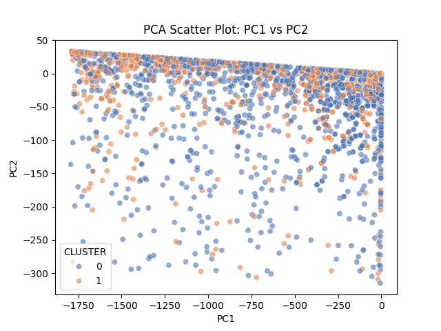
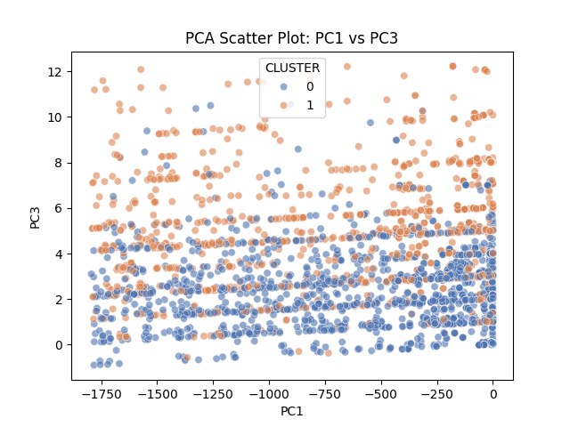
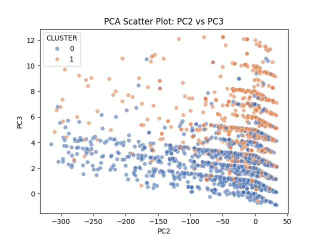

ML Methods
Comprehensive Data Analysis of AI and Non-AI Jobs Using K-Means Clustering, Regression Analysis, and Random Forest
1 Unsupervised Clustering
As a group, we will be implementing an unsupervised clustering model using the K-mean algorithm. We are seeking to differentiate AI-related jobs postings from non-AI ones. AI-related job postings will be defined by AI-related keywords. The results will serve to tell us how how certain features separate AI-related job postings from non-AI.
2 Features and Silhouette Score
We will be using the following features for our clustering model:
- Average Salary, expected to capture pay differences
- Job Title (Encoded), expected to capture role differences
- NAICS Code (Encoded), expected to separate jobs by sectors
- Average Years of Experience, expected to capture experience level differences
Grouping these features in a cluster of 2, we found a silhouette score of approximately 0.695, indicating a good clustering structure. However, since the score is not closer to 1 than expected, reflecting the complexity between AI and non-AI job postings.
| IS_AI_ROLE | CLUSTER | count |
|---|---|---|
| 1 | 0 | 47 |
| 1 | 1 | 19 |
| 0 | 0 | 2195 |
| 0 | 1 | 1669 |
The table shows the count of jobs by AI role and cluster. There are 66 AI - Labeled jobs total. Non - AI jobs are more numerous, with 3,864 present in the data set.
3 Pairwise Plots
Below are a series of pairwise plots showing the relationships between the features used in the clustering model, consisting of Average Salary, Job Title (Encoded), NAICS Code (Encoded), and Average Years of Experience. The plots seek to visualize how these features interact and potentially separate AI-related job postings from non-AI ones. From the plots, a clear relationship is not visible between the features due to the lower number of AI-related job postings in the dataset.
It would be unusual to see any AI jobs since AI jobs are not common in the hiring process. The few present in the visualizations are likely the ones that require higher technical skills in the ML domain. To further study our prompt, other processes will need to be performed.
4 PCA 2D Visualization Excluding Salary
Generating a 2D PCA plot excluding salary to visualize the clustering of AI-related and non-AI jobs based served as a useful alternative to the previous pairwise plots. The following PCA plots consist of PC1 vs PC2, PC1 vs PC3, and PC2 vs PC3.
The PC1 vs PC2 plots shows some separation between clusters along PC1, but a lot of overlap along PC2. The PC1 vs PC3 plot demonstrates a clearer separation between the clusters, with cluster groups more distinctly divided along PC3. The PC2 vs PC3 presents moderate cluster separation, with the appearance of vertical banding along PC2.
The results of the PCA plots indicate the there are now two visually distinct clusters, which is an improvement from the previous pairwise plots. However, there is still confusion regarding which features strongly divide AI-related job postings from non-AI ones.



5 PCA Loadings Table
| Variable | PCA1 | PCA2 | PCA3 |
|---|---|---|---|
| TITLE_ENCODED | -0.999826 | 0.018638 | -0.000502 |
| NAICS_ENCODED | -0.018640 | -0.999809 | 0.005905 |
| AVG_YEARS_EXPERIENCE | -0.000392 | 0.005913 | 0.999982 |
Loading the data set, PC1 is entirely dominated by TITLE_ENCODED, with a coefficient of 0.999. This means the differences in job titles are the main factor separating the clusters. The second largest variance, PC2, is dominated by NAICS_ENCODED with a coefficient of 0.998, indicating that the industry sector is the next most important factor. PC3 is dominated by AVG_YEARS_EXPERIENCE with a coefficient of 0.999, suggesting that experience level is also a significant factor in distinguishing between job postings, which could lead to differences in salary.
6 Differences Between AI and Non-AI Job Postings Using K-Means Clustering
Using K-means clustering, we identified two clusters in our dataset through a series of processes including selecting features, calculating a silhouette score, and visualizing the data using PCA 2D plots. Although this is an unsupervised learning method, the clusters likely correspond to AI-related and non-AI jobs postings based on the features used. Clusters are primarily separated by job titles, a strong indicator of whether a job is AI-related. Industry classification and experience level also play a role in distinguishing between the two types of job postings. The process, while not definitive, provides insights into the characteristics that differentiate AI-related jobs postings from non-AI ones in the dataset.
8 Logistic Regression Analysis
We assessed the relationship between job characteristics and the likelihood of a role being AI-related using logistic regression. The model incorporated variables such as industry classification (NAICS codes), job titles, and experience levels, and we applied weights to account for the class imbalance, as AI-related postings represent a small minority of all jobs. From the analysis, we deduced that industries like information, software, and professional and technical services had a higher probability of including AI-related roles. Experience level contributed modestly, indicating that AI positions tend to require more specialized or senior expertise. The model achieved an ROC AUC of approximately 0.62 and an accuracy of 0.63, suggesting that while the logistic regression captured some patterns distinguishing AI and non-AI postings, there remains substantial overlap across industries and experience levels.